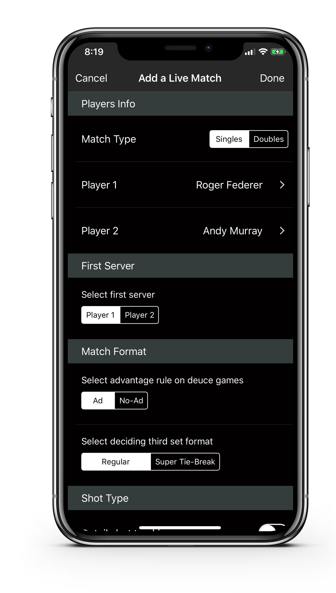
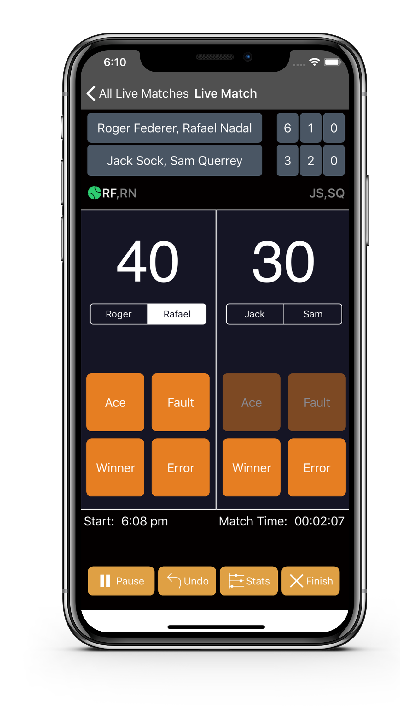
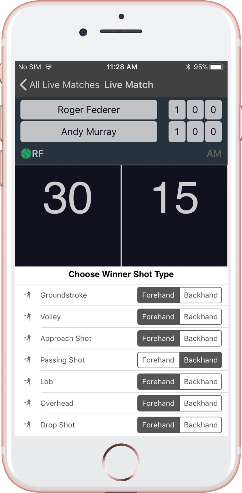
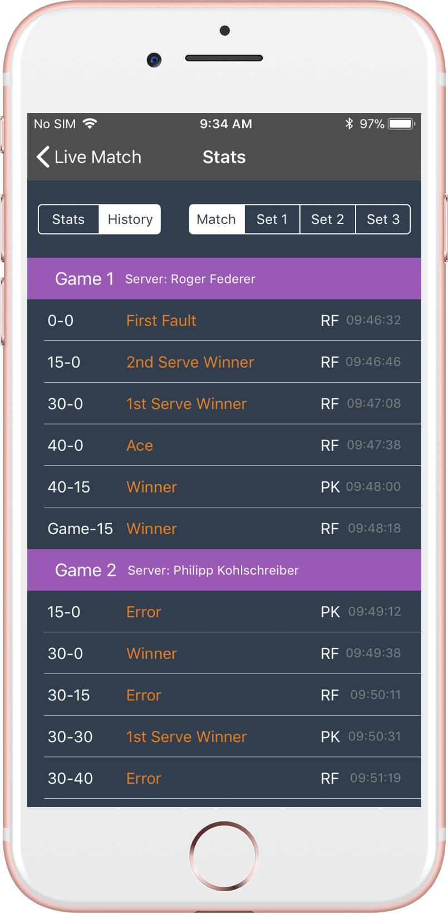
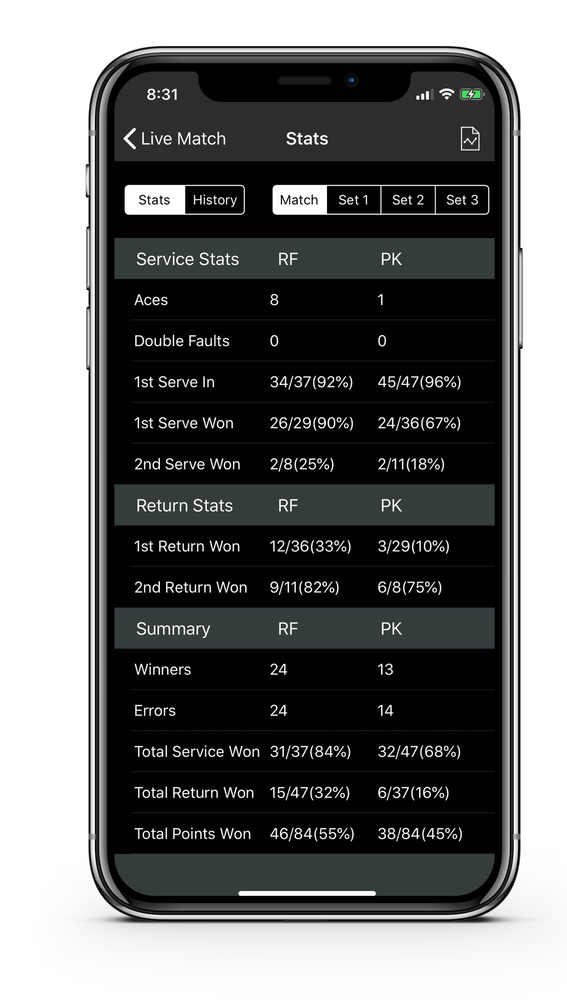

Live Match Point By Point Tracking
For parents, coaches, teams and tennis fans, we offer you the best way to watch and track live tennis. Keep track of each tennis point details and analyze the key match statistics. Parents, coaches can use the insight to identify areas for improvement.
Add a Live Match
Go to TennisKeeper > More > Track Live Match Point by Point.
Tap (+) to add a new live match.

Enter Live Match Information
In the Add A Live Match view, indicate if you want to track a Singles or Doubles match.
Select your tennis players and Match Format.
You can also indicate if you want to do easy or detail shot type tracking. If you choose
detail shot tracking, you have to make additonal classification on each shot. For example
a volley or an approach shot.

Track Match Point By Point
Tap on the match and start tracking point by point by tapping on one of the action buttons:
Ace, Fault, Winner or Error. For doubles match, tap on the player name
to identify the player that made the winner or error shot.

If you select Detail Shot Tracking, for each winner or error, you will need to
identify the shot type and indicate if it is forehand or backhand.

Match Timeline
At any point in time, tap on Stats and you can review the history of the match:

Match Stats
TennisKeeper will calculate the running status for your players.
At any point in time, you can see the Service, Return and Summary Stats of each player.
